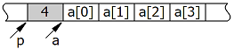

Язык C: malloc/free
Статья про отказ от освобождения памяти при malloc и free.
https://habrahabr.ru/post/158347/
Жаль, что причины такого поведения скрываются за "такая уж работа malloc" без особой аргументации.
В добавок к комментариям реализацию mmap можно посмотреть тут: https://elixir.free-electrons.com/linux/latest/source/mm/mmap.c
В кратце: При размере равном:
520168 байт и выше — освобождение проходит нормально
520167 байт и ниже — имеем описанную проблему
Язык C++: new/delete
Переменная объектного типа в динамической памяти создаётся в два этапа:
Удаляется такая переменная тоже в два этапа:
The new-expression attempts to create an object of the type-id or new-type-id to which it is applied. /*дальше нам не интересно*/
void* operator new(std::size_t size) throw(std::bad_alloc);
Effects: The allocation function called by a new-expression (5.3.4) to allocate size bytes of storage suitably aligned to represent any object of that size.
#include <iostream>
class Test {
public:
Test() {
std::cout << "Test::Test()" << std::endl;
}
void* operator new (std::size_t size) throw (std::bad_alloc) {
std::cout << "Test::operator new(" << size << ")" << std::endl;
return ::operator new(size);
}
};
int main() {
Test *t = new Test();
void *p = Test::operator new(100); // 100 для различия в выводе
}
Этот код выведет следующее
Test::operator new(1)
Test::Test()
Test::operator new(100)
Код взят с https://habrahabr.ru/post/185662/
Язык C++: new[]/delete[]
Массив объектов создаётся в два этапа:
Удаляется массив объектов тоже в два этапа:
На этапе компиляции неизвестно, на сколько элементов выделяется массив, а значит без использования дополнительной информации невозможно вызвать деструкторы всех элементов массива.
К примеру, механизм создания и удаления массивов объектов может быть реализован следующим образом (рисунок ниже). С помощью функции operator new выделяется размер памяти, равный суммарному размеру всех элементов массива и размеру служебной информации. Оператор new выделяет память и возвращает, допустим, указатель p. По этому указателю записывается служебная информация, а в программу возвращается указатель на первый элемент массива. Аналогично, при вызове delete, в функцию operator delete передаётся не указатель на первый элемент массива, а указатель, на начало блока, выделенного оператором new.

C++ без new и delete
https://habrahabr.ru/company/aligntechnology/blog/283352/
Прекрасное руководство по написанию собственного аллокатора памяти
https://habrahabr.ru/post/148657/
Memory management в ядре Linux. Семинар в Яндексе
https://habrahabr.ru/company/yandex/blog/231957/